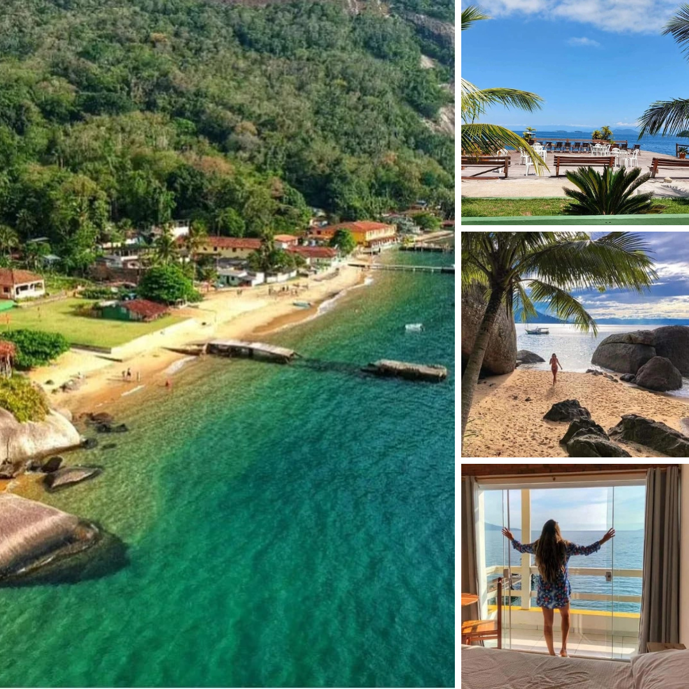
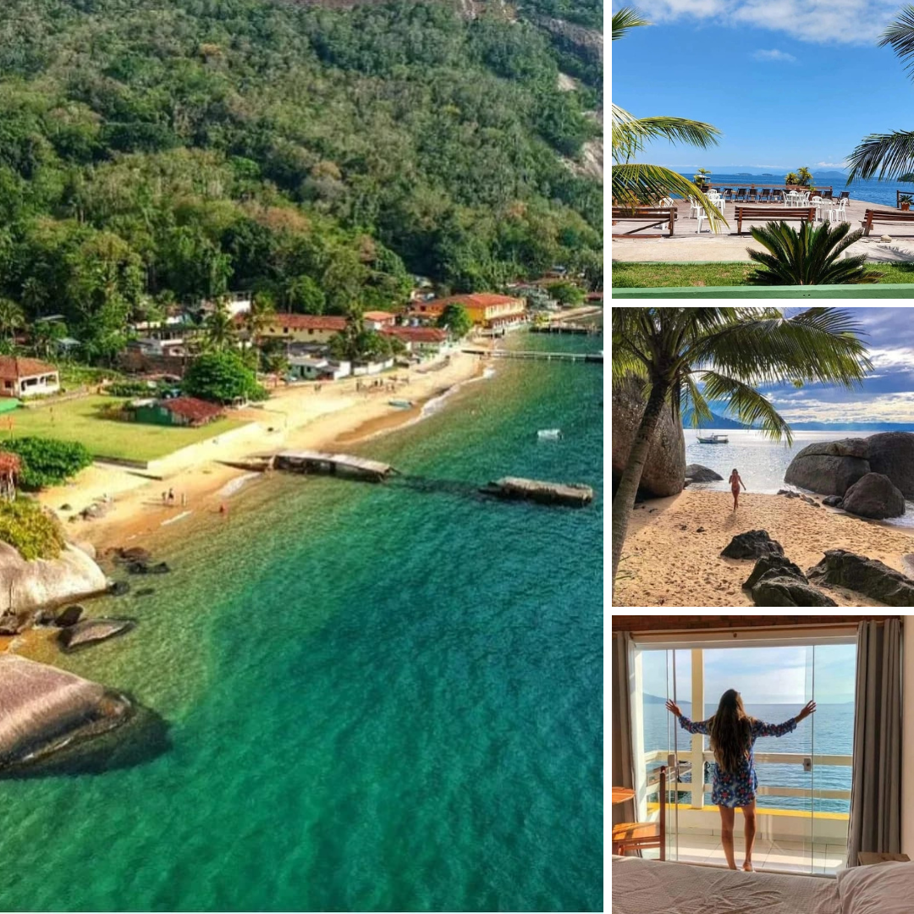

🪙 INVESTIMENTOS 🪙
🩠Apartamento Compartilhado c/ ventilador.
👉🽠R$:649,99 por pessoa.
👉🽠R$:599,99 6 a 9 anos.
🩠Apartamento Simples com ventilador, privado.
👉🽠R$:789,90 por pessoa.
👉🽠R$: 1.549,90 casal.
👉🽠R$: 599,90 6 a 9 anos.
🩠Apartamentos laterais C/ar condicionado, frigobar.
👉🽠R$:869,90 por pessoa.
👉🽠R$: 1.699,99casal.
👉🽠R$: 669,90 6 a 9 anos.
🩠Apartamentos de frente P/Mar C/ar condicionado, cama box, frigobar e TV.
👉🽠R$: 919,99 por pessoa.
👉🽠R$: 1.799,99 casal.
👉🽠R$: 679,90 6 a 9 anos.
✅ Formas de Pagamento.
🪙 Pague via Pix, depósito bancário ou transferência.
💳 Pague no cartão de crédito até 12x, com pequenos ajustes.
🙋🏻‍♂Organize sua agenda, venha estar com a gente. 👏🏼
⚠ Valor individual e casal ⚠
✅ Todas as opções, mÃnimo 2 pessoas por apartamento.(exceto o apartamento compartilhado).✅
🚠Locais de embarque sexta;
🚠Graal Resende; 16:00
👉🽠Plataforma 06
🚠Floriano; 16:15
👉🽠Posto Olá, sentido Rio.
⚠ SaÃdas nas cidades acima taxa de embarque R$: 30,00 por pessoa ⚠
🚠Barra Mansa; 16:45
👉🽠Ponto Comercial, centro
🚠Volta Redonda; 17:00
👉🽠Umuarama, praça Brasil.
⌠Horários podem sofrer alterações, devido a trânsito ou disponibilidade do grupo de antecipar os mesmos.âŒ
🚠Retorno Domingo: 15:30